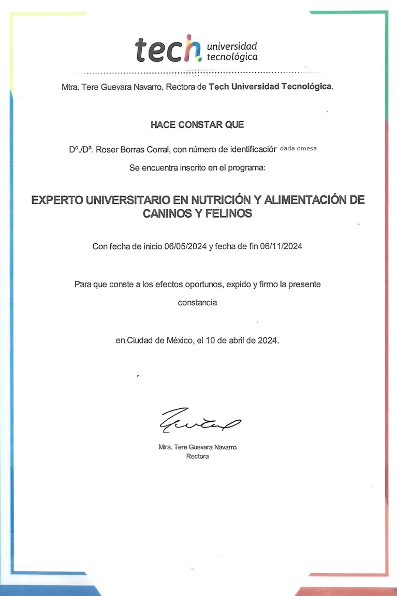
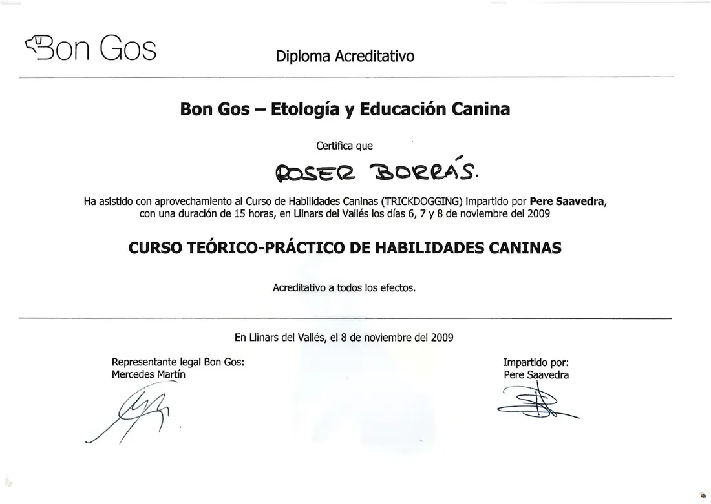
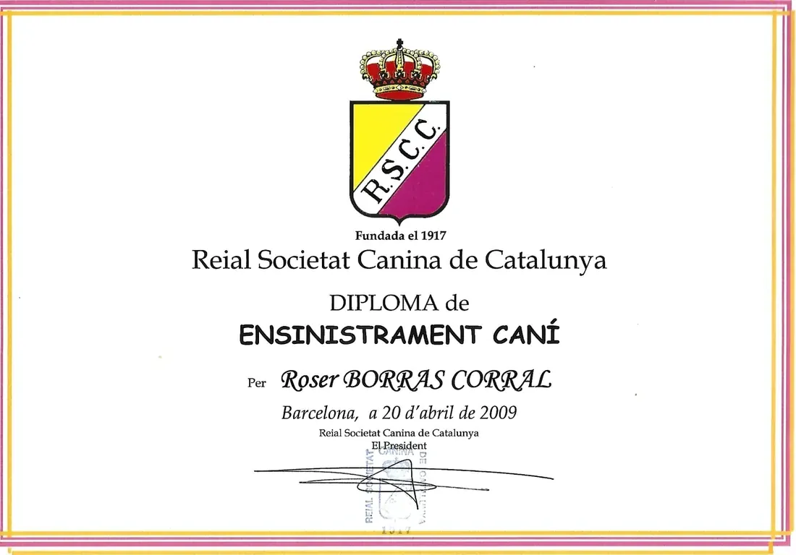
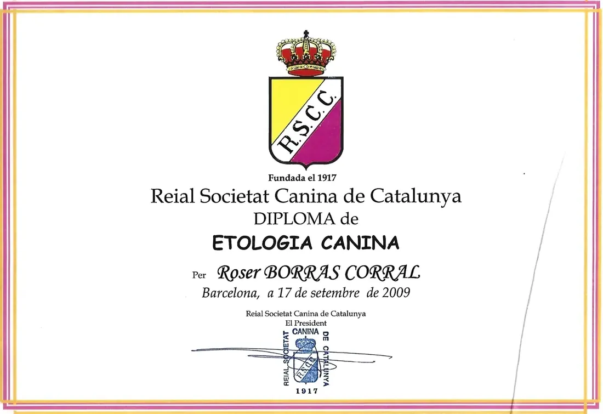

Ingredientes identificables
Carne, huesos carnosos, vísceras, verdura y fruta forman las recetas BARFEAND.
BARFEAND · by El Rebost del Nord
Nuestra experiencia con la carne, en cada bol.
Somos la marca de alimentación BARF de El Rebost del Nord. Elaboramos en Andorra recetas para perros y gatos con ingredientes identificables e información clara en cada paquete.

Nuestro origen
BARFEAND está vinculada a El Rebost del Nord. Nuestro trabajo con las carnes y los elaborados nos ha llevado a crear una gama de alimentación cruda para perros y gatos, preparada en Andorra.
Queremos que sea fácil saber qué contiene cada ración. Por eso identificamos las recetas, detallamos los ingredientes y mostramos el lote y la fecha de caducidad en el envase.
Descubre nuestras recetasNuestra forma de trabajar
Presentamos cada producto con información concreta para que elijas la gama y el formato que mejor se adapte a tu compra.
Carne, huesos carnosos, vísceras, verdura y fruta forman las recetas BARFEAND.
Recetas monoproteicas con una sola especie animal y una opción multiproteína que combina pollo, ternera y cerdo.
Formatos de 500 g y 1 kg, con lote, fecha de caducidad e indicaciones de conservación congelada a −18 °C.
Documentación
La documentación aportada a BARFEAND corresponde a Roser Borras Corral. Incluye tres diplomas de educación y etología canina y una constancia de inscripción en un programa de nutrición y alimentación canina y felina.

Inscripción en el programa «Experto Universitario en Nutrición y Alimentación de Caninos y Felinos» de TECH Universidad Tecnológica.
Ver documento
Curso teórico y práctico de Bon Gos – Etología y Educación Canina, impartido los días 6, 7 y 8 de noviembre de 2009.
Ver documento
Diploma de la Reial Societat Canina de Catalunya, emitido en Barcelona el 20 de abril de 2009.
Ver documento
Diploma de la Reial Societat Canina de Catalunya, emitido en Barcelona el 17 de septiembre de 2009.
Ver documento¿Seguimos?